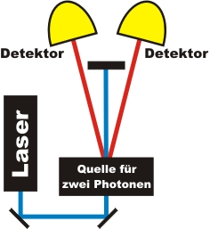

Koinzidenzmethode Kapitel 1:
Methode ohne Verluste - für die Schule
In diesem Kapitel wird die Koinzidenzmethode für die Schule erläutert. Zunächst wird mit einer Animation erklärt, was eine Koinzidenz ist. Danach wird das Prinzip auf das Realexperiment übertragen. Zur Vereinfachung werden in diesem Kapitel die Photonenverluste nicht betrachtet.
Prinzip der Koinzidenzmethode
In Grundlagen - Kapitel 1 wurde ausführlich erläutert, dass mit einem abgeschwächten Laser keine einzelnen Photonen präpariert werden können. Es wurde auch erklärt, dass ein "klick" eines Detektors kein Photon gewesen sein muss. Es könnte auch ein Dunkelrauschereignis gewesen sein. Für die Experimente zur Untersuchung der Quantenphänomene muss es bei jedem "klick" klar sein, das dies ein einzelnes Photon und kein Dunkelrauschereignis war. Um diese Bedingung zu erfüllen wird ein experimenteller Trick mit Photonenpaaren angewendet.
Aus einer Quelle werden zu einem spontanen Zeitpunkt immer gleichzeitig zwei Photonen emittiert. Die Photonen werden dabei von zwei Detektoren registriert (Abb. 1). Wenn zwei getrennte Detektoren innerhalb eines sehr kurzen Zeitabstandes (0,000000002s) "klicken", dann war auf jeder Seite ein Photon vorhanden. Die Wahrscheinlichkeit für ein gleichzeitiges Dunkelrauschen von zwei Detektoren in einem Zeitraum von 0,000000002s kann ausgeschlossen werden. Jede gleichzeitige Registrierung (Koinzidenz) ist somit ein eindeutiger Hinweis: "da war auf jeder Seite je ein einzelnes Photon". In allen Experimenten auf der Homepage werden nur die Ereignisse angezeigt, bei denen eine Koinzidenz und somit mit Sicherheit je ein einzelnes Photon vorhanden war.

Abb. 1 Experiment zur Aufnahme von Koinzidenzen
Animation zur Koinzidenzmethode
Um zwei einzelne Photonen zu erzeugen wird eine spezielle Photonenpaarquelle benötigt. Zum Erzeugen von zwei Photonen benötigt die Quelle Energie. Als Energiequelle dient ein blauer Laser (405nm). Der blaue Laser sendet einzelne Lichtpulse aus, wobei bei jedem Lichtpuls unzählige Photonenpaare in der Quelle erzeugt werden könnten. In der folgenden Animation kannst du einzelne Laserpulse auf die Photonenpaarquelle schicken. Was stellst du bei den Detektoren fest?
Beobachtung und Erklärung:
Bei ganz vielen Laserpulsen reagiert keiner der beiden Detektoren. Die Quelle arbeitet extrem ineffizient und konvertiert nur ganz selten einen Laserpuls in ein Photonenpaar. Jeder einzelne Laserpuls besteht aus Millionen von Photonen mit der Wellenlänge 405nm. Von den vielen 405nm Photonen des einzelnen Laserpulses wird höchst selten ein 405nm Photon für die Erzeugung eines einzelnen Photonenpaars verwendet. Somit kommt nahezu das gesamte Laserlicht nach der Photonenpaarquelle wieder heraus und wird an einer schwarzen Platte absorbiert. Sehr selten wird ein einzelnes Photonenpaar erzeugt. Fast niemals werden aufgrund der geringen Effizienz der Quelle zwei einzelne Photonenpaare erzeugt.
Weiterhin fällt in der Animation auf, dass ein einzelner Detektor ein Ereignis registriert und der andere Detektor nicht. Diese Einzelereignisse werden durch das Dunkelrauschen der Detektoren oder durch Photonenverluste verursacht. Als wirkliche Detektion eines Photons werden nur die Ereignisse akzeptiert, wenn beide Detektoren gleichzeitig (innerhalb von 2ns) etwas registriert haben. Das Experiment kann so eingestellt werden, dass der Laser so lange pulst, bis eine Koinzidenz erfolgt ist. Alle Einzelereignisse dazwischen werden dabei ignoriert.
Experiment zur Koinzidenzmethode
Nachdem du hoffentlich das Prinzip der Koinzidenzmethode verstanden hast, gehen wir nun zum realen Experiment über. Der Aufbau des Koinzidenzexperimentes und die einzelnen optischen Bauteile werden im Abschnitt Aufbau erklärt. Die Quelle für die Photonenpaare ist im Experiment relativ klein: Sie besteht aus einem durchsichtigen Kristall, der ganz bestimmte optische Eigenschaften hat. Der Kristall kann mit einer sehr geringen Effizienz zwei einzelne Photonen erzeugen. Führe das interaktive Experiment einige male durch und mache dir die Koinzidenzmethode noch einmal klar. Mit der Einstellung "Laserpulse bis Koinzidenz" wird bei jedem Tastendruck genau ein Photonenpaar erzeugt und nachgewiesen.
Zum Kapitel 2: Koinzidenzmethode mit Verlusten [klick]
Zurück zur Übersicht [klick]
Autor: P. Bronner, April 2008